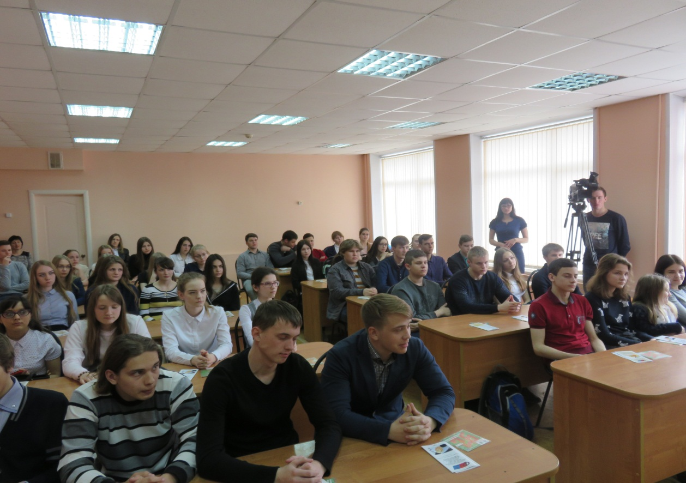
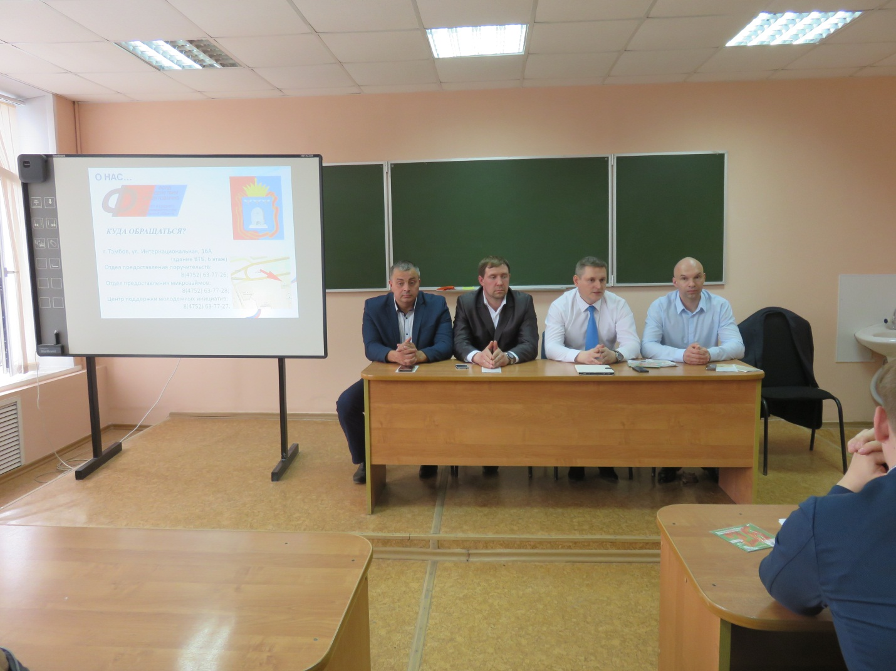
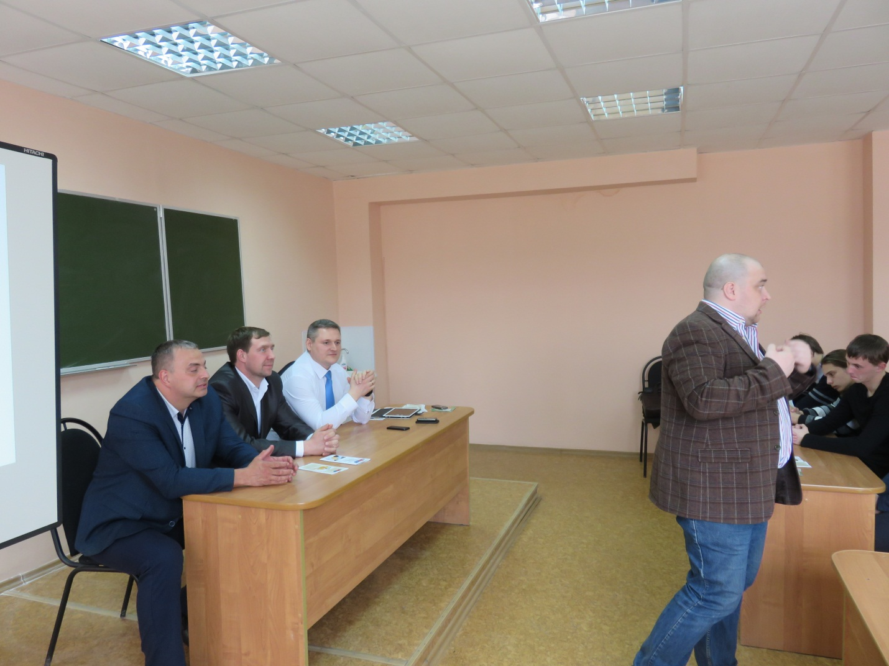

Дни финансовой грамотности в средней общеобразовательной школе города Рассказово
14 апреля 2017 года в средней общеобразовательной школе № 4 города Рассказово прошло мероприятие «Дни финансовой грамотности», организованное АО МК «Фонд содействия кредитованию малого и среднего предпринимательства Тамбовской области» (далее – Фонд).
Мероприятие проводили представители Фонда - генеральный директор А.М. Блудов, заместитель генерального директора А.Н. Шепелёв и руководитель Центра поддержки молодежных инициатив А.И. Евсейчев. Также в мероприятии приняли участие представители администрации города Рассказово.
Внимание школьников акцентировали на том, что финансовая грамотность является одним из главных условий повышения уровня жизни как граждан, так и всей страны. Учитывая усложнение системы и появление разнообразных услуг, граждане должны уметь принимать взвешенные решения по их использованию, получать полезную информацию в области денежных отношений, уметь планировать бюджет.
Пропаганда и популяризация предпринимательской деятельности, а также бизнес-образование молодёжи является одним из приоритетных направлений деятельности Фонда.


